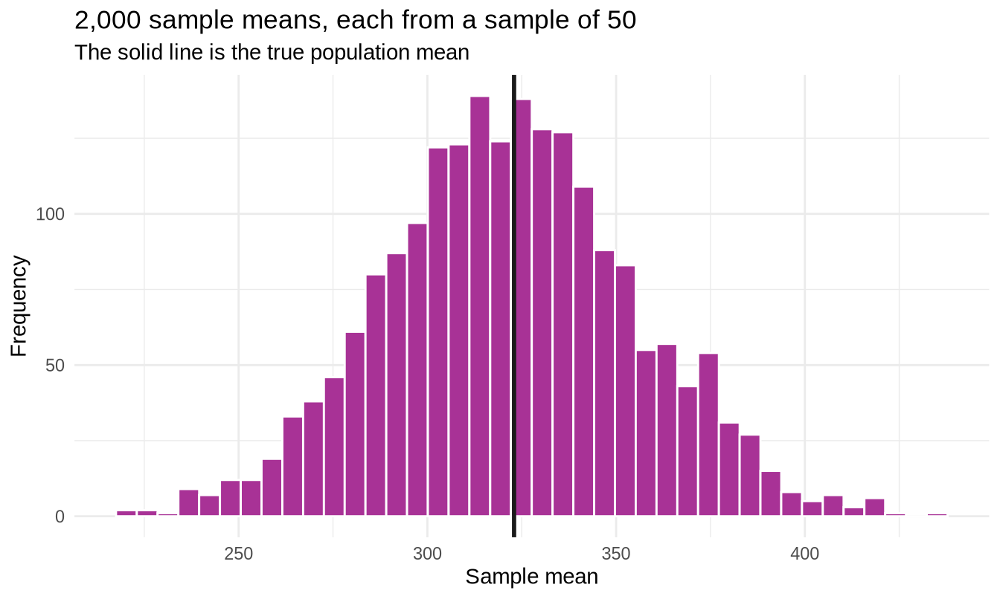
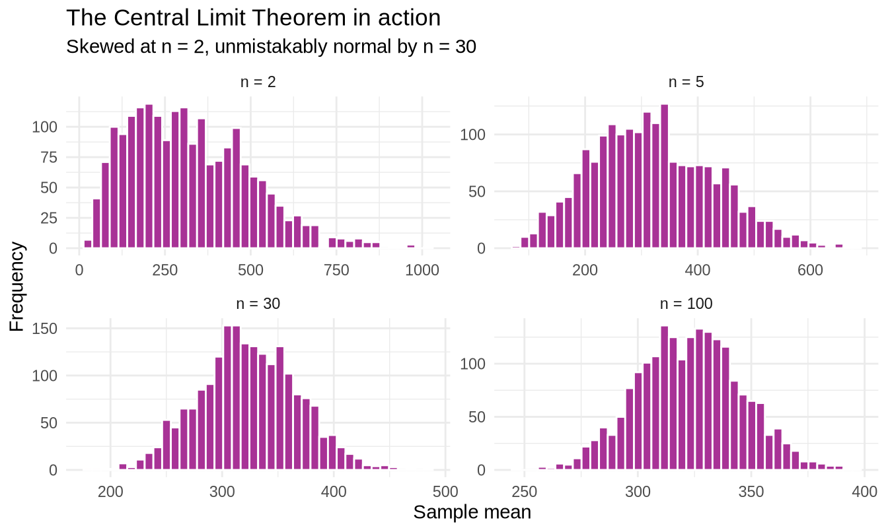
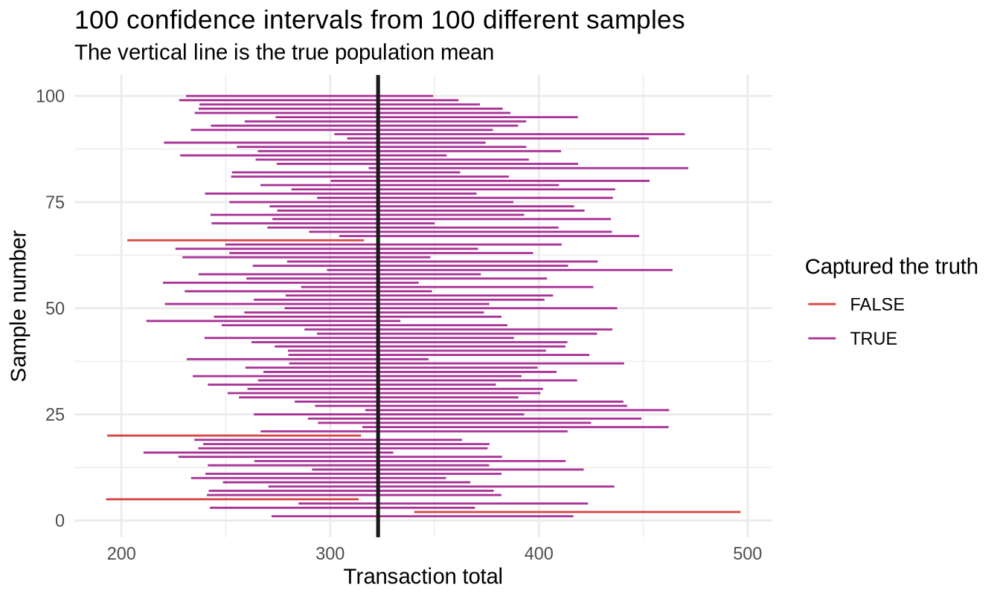

library(tidyverse)
library(readxl)
set.seed(2024)
sales <- read_excel("../data/supermarket_sales.xlsx")3.2 Estimation and Confidence Intervals
307102 Descriptive Statistics for Business | University of Petra
TipLecture slides
This same material is also available as a slide deck: Open the slides →
Arrow keys to move, F for full screen, S for the presenter view with speaker notes, B for the chalkboard, Esc for a grid of all slides.
New R this week
| Function | What it does | Why a business needs it |
|---|---|---|
sample() |
Draws a random subset of rows or values | Simulating what a survey would have found |
replicate() |
Repeats an expression many times | Building a sampling distribution from scratch |
qt() |
Critical value from the t-distribution | The multiplier in a confidence interval |
t.test() |
Confidence interval for a mean, in one line | The everyday tool |
prop.test() |
Confidence interval for a proportion | “What share of customers are members?” |
Objectives
By the end of this notebook you will be able to:
- Explain the difference between a population and a sample, and between a parameter and a statistic
- Describe what a sampling distribution is, and demonstrate the Central Limit Theorem by simulation
- Calculate and interpret the standard error of the mean
- Build a confidence interval for a mean by hand and with
t.test() - Build a confidence interval for a proportion
- Explain what a 95 percent confidence interval does and does not mean
- Work out the sample size needed for a target margin of error
Setup
1. Population, sample, parameter, statistic
Four words that get confused constantly. Getting them straight is most of the battle.
| Term | Meaning | Notation | Example |
|---|---|---|---|
| Population | Every member of the group you care about | - | All transactions the chain will ever process |
| Sample | The subset you actually observed | - | Our 1,000 transactions |
| Parameter | A number describing the population | Greek: mu, sigma, p | The true average transaction value |
| Statistic | A number describing the sample | Latin: x-bar, s, p-hat | Our sample mean of 323 |
TipThe whole of inferential statistics in one sentence
You can calculate a statistic. You want to know a parameter. Statistics is the discipline of saying how close the first is likely to be to the second.
For teaching purposes we are going to treat our 1,000 transactions as if they were the entire population, then draw samples from them. That lets us see the true answer and check whether our methods find it - something you can never do with real data, which is exactly why simulation is such a good teacher.
true_mean <- mean(sales$Total)
true_sd <- sd(sales$Total)
tibble(true_mean = round(true_mean, 2), true_sd = round(true_sd, 2))#> # A tibble: 1 × 2
#> true_mean true_sd
#> <dbl> <dbl>
#> 1 323. 246.2. Sampling variation
Take a sample of 50 transactions and compute the mean. Then do it again.
sample_1 <- sample(sales$Total, size = 50)
sample_2 <- sample(sales$Total, size = 50)
sample_3 <- sample(sales$Total, size = 50)
tibble(
sample = c("Sample 1", "Sample 2", "Sample 3", "TRUE POPULATION"),
mean = round(c(mean(sample_1), mean(sample_2), mean(sample_3), true_mean), 2)
)#> # A tibble: 4 × 2
#> sample mean
#> <chr> <dbl>
#> 1 Sample 1 352.
#> 2 Sample 2 312.
#> 3 Sample 3 337.
#> 4 TRUE POPULATION 323.Three different samples, three different answers, none of them exactly the true value. This is not a mistake. It is the fundamental problem of statistics.
Your business has one sample. It got one of these numbers. The question is not “how do I avoid this?” - you cannot - but “how far off am I likely to be?”
3. The sampling distribution
If one sample mean is unreliable, what happens if we look at thousands of them?
sample_means_50 <- replicate(2000, mean(sample(sales$Total, size = 50)))
tibble(
mean_of_the_means = round(mean(sample_means_50), 2),
true_mean = round(true_mean, 2),
sd_of_the_means = round(sd(sample_means_50), 2)
)#> # A tibble: 1 × 3
#> mean_of_the_means true_mean sd_of_the_means
#> <dbl> <dbl> <dbl>
#> 1 322. 323. 33.3Two remarkable things.
The average of the sample means lands almost exactly on the true mean. Individual samples are unreliable, but they are unreliable symmetrically - they miss high as often as low. The sample mean is an unbiased estimator.
The sample means vary far less than individual transactions do. The transactions had a standard deviation of about 246; the sample means have one of about 35. Averaging cancels out noise.
tibble(sample_mean = sample_means_50) |>
ggplot(aes(x = sample_mean)) +
geom_histogram(bins = 40, fill = "#A83296", colour = "white") +
geom_vline(xintercept = true_mean, colour = "#1A1A1A", linewidth = 1) +
labs(title = "2,000 sample means, each from a sample of 50",
subtitle = "The solid line is the true population mean",
x = "Sample mean", y = "Frequency") +
theme_minimal()
4. The Central Limit Theorem
Look at that histogram again. It is bell-shaped - even though individual transaction totals were clearly right-skewed in section 2.
That is the Central Limit Theorem, and it is the single most important result in statistics.
TipThe Central Limit Theorem
As the sample size grows, the distribution of the sample mean approaches a normal distribution - regardless of the shape of the original population.
Its centre is the population mean. Its standard deviation is population sd / sqrt(n), which is called the standard error.
This is why the normal distribution dominates statistics even though real business data is rarely normal. You are almost never modelling individual values. You are modelling an average, and averages become normal even when the things being averaged are not.
Watching it happen
sample_sizes <- c(2, 5, 30, 100)
clt_data <- map_dfr(sample_sizes, function(size_n) {
tibble(
n = paste("n =", size_n),
sample_mean = replicate(2000, mean(sample(sales$Total, size = size_n)))
)
}) |>
mutate(n = factor(n, levels = paste("n =", sample_sizes)))
ggplot(clt_data, aes(x = sample_mean)) +
geom_histogram(bins = 40, fill = "#A83296", colour = "white") +
facet_wrap(~ n, scales = "free") +
labs(title = "The Central Limit Theorem in action",
subtitle = "Skewed at n = 2, unmistakably normal by n = 30",
x = "Sample mean", y = "Frequency") +
theme_minimal()
At n = 2 the distribution still carries the right skew of the original data. By n = 30 it is convincingly bell-shaped. This is where the common rule of thumb “n of at least 30” comes from.
Warningn = 30 is a rule of thumb, not a law
How large a sample you need depends on how skewed the population is. Mildly skewed data is fine at n = 15. Severely skewed data - insurance claims, say, where one claim can dwarf a thousand others - may need several hundred.
The honest procedure is to check, not to recite 30.
The standard error
n <- 50
tibble(
formula_se = round(true_sd / sqrt(n), 3),
simulated_se = round(sd(sample_means_50), 3)
)#> # A tibble: 1 × 2
#> formula_se simulated_se
#> <dbl> <dbl>
#> 1 34.8 33.3The formula and the simulation agree. The standard error is the standard deviation of the sampling distribution: the typical distance between a sample mean and the truth.
Notice the sqrt(n). To halve your uncertainty you must quadruple your sample size. This is the single most important practical fact about sampling, and it is why surveys get expensive fast.
tibble(
sample_size = c(10, 25, 50, 100, 400, 1600),
standard_error = round(true_sd / sqrt(c(10, 25, 50, 100, 400, 1600)), 2)
)#> # A tibble: 6 × 2
#> sample_size standard_error
#> <dbl> <dbl>
#> 1 10 77.8
#> 2 25 49.2
#> 3 50 34.8
#> 4 100 24.6
#> 5 400 12.3
#> 6 1600 6.15Going from 100 to 400 costs four times as much and only halves the error. Going from 400 to 1600 costs four times again for another halving. There is a point where more data stops being worth the money, and this table is how you find it.
5. Confidence intervals for a mean
A single number - “the average transaction is 323” - hides all of this uncertainty. A confidence interval reports a range instead.
Building one by hand
The recipe: take your estimate, and go out a certain number of standard errors either side.
\[\bar{x} \pm t^* \times \frac{s}{\sqrt{n}}\]
my_sample <- sample(sales$Total, size = 50)
x_bar <- mean(my_sample)
s <- sd(my_sample)
n <- length(my_sample)
se <- s / sqrt(n)
# The multiplier for 95 percent confidence, with n - 1 degrees of freedom
t_star <- qt(0.975, df = n - 1)
tibble(
x_bar = round(x_bar, 2),
se = round(se, 2),
t_star = round(t_star, 3),
lower = round(x_bar - t_star * se, 2),
upper = round(x_bar + t_star * se, 2)
)#> # A tibble: 1 × 5
#> x_bar se t_star lower upper
#> <dbl> <dbl> <dbl> <dbl> <dbl>
#> 1 299. 35.8 2.01 227. 371.Three things to notice about qt(0.975, df = n - 1).
Why 0.975 and not 0.95? For a 95 percent interval you leave 5 percent outside, split as 2.5 percent in each tail. So you want the value with 97.5 percent below it.
Why the t-distribution rather than the normal? Because you are using the sample standard deviation s in place of the unknown population sigma. That substitution adds uncertainty, and the t-distribution’s slightly fatter tails account for it.
Why n - 1? These are the degrees of freedom. Once you know the sample mean and n - 1 of the values, the last value is determined - so only n - 1 pieces of information are genuinely free.
tibble(
sample_size = c(5, 10, 30, 100, 1000),
t_multiplier = round(qt(0.975, df = c(5, 10, 30, 100, 1000) - 1), 3),
z_multiplier = round(qnorm(0.975), 3)
)#> # A tibble: 5 × 3
#> sample_size t_multiplier z_multiplier
#> <dbl> <dbl> <dbl>
#> 1 5 2.78 1.96
#> 2 10 2.26 1.96
#> 3 30 2.04 1.96
#> 4 100 1.98 1.96
#> 5 1000 1.96 1.96The t multiplier starts large and converges on 1.96 as the sample grows. With small samples you pay a real penalty in interval width; by n = 100 the difference is negligible.
The one-line version
t.test(my_sample)#>
#> One Sample t-test
#>
#> data: my_sample
#> t = 8.3692, df = 49, p-value = 5.237e-11
#> alternative hypothesis: true mean is not equal to 0
#> 95 percent confidence interval:
#> 227.4594 371.2098
#> sample estimates:
#> mean of x
#> 299.3346t.test() does everything above. Read the 95 percent confidence interval line. (The rest of that output is a hypothesis test, which is section 3.3 - ignore it for now.)
To extract just the interval:
t.test(my_sample)$conf.int#> [1] 227.4594 371.2098
#> attr(,"conf.level")
#> [1] 0.95Different confidence levels:
tibble(
level = c("90%", "95%", "99%"),
lower = c(t.test(my_sample, conf.level = 0.90)$conf.int[1],
t.test(my_sample, conf.level = 0.95)$conf.int[1],
t.test(my_sample, conf.level = 0.99)$conf.int[1]),
upper = c(t.test(my_sample, conf.level = 0.90)$conf.int[2],
t.test(my_sample, conf.level = 0.95)$conf.int[2],
t.test(my_sample, conf.level = 0.99)$conf.int[2])
) |>
mutate(width = round(upper - lower, 2),
lower = round(lower, 2),
upper = round(upper, 2))#> # A tibble: 3 × 4
#> level lower upper width
#> <chr> <dbl> <dbl> <dbl>
#> 1 90% 239. 359. 120.
#> 2 95% 227. 371. 144.
#> 3 99% 203. 395. 192.Higher confidence means a wider interval. There is no free lunch: the only way to be more certain of capturing the truth is to claim less about where it is. A 100 percent confidence interval would run from minus infinity to plus infinity - perfectly reliable and perfectly useless.
6. What a confidence interval actually means
This is the most misunderstood idea in the course, and it is worth getting exactly right.
WarningWhat it does NOT mean
A 95 percent confidence interval does not mean “there is a 95 percent probability the true mean is in this interval”.
The true mean is a fixed number. It is either in your interval or it is not. There is no probability about it once the interval is calculated.
TipWhat it DOES mean
The procedure captures the true mean 95 percent of the time.
If you repeated the whole exercise - draw a sample, build an interval - a hundred times, about 95 of your intervals would contain the true value and about 5 would miss.
You do not know which kind yours is.
Demonstrating it
set.seed(99)
ci_results <- map_dfr(1:100, function(i) {
s <- sample(sales$Total, size = 50)
ci <- t.test(s)$conf.int
tibble(
run = i,
lower = ci[1],
upper = ci[2],
captured = ci[1] <= true_mean & true_mean <= ci[2]
)
})
# How many of the 100 intervals contained the true mean?
sum(ci_results$captured)#> [1] 96ggplot(ci_results, aes(y = run, colour = captured)) +
geom_segment(aes(x = lower, xend = upper, yend = run), linewidth = 0.5) +
geom_vline(xintercept = true_mean, colour = "#1A1A1A", linewidth = 0.9) +
scale_colour_manual(values = c("TRUE" = "#A83296", "FALSE" = "#D64545"),
name = "Captured the truth") +
labs(title = "100 confidence intervals from 100 different samples",
subtitle = "The vertical line is the true population mean",
x = "Transaction total", y = "Sample number") +
theme_minimal()
Each horizontal line is one 95 percent confidence interval from one sample. Most cross the true mean; a handful, shown in red, miss entirely.
Those red intervals are not mistakes. Nothing was done wrong in producing them. They are the 5 percent the method is designed to get wrong, and there is no way to tell from the inside which of your intervals is one of them.
7. Confidence intervals for a proportion
Not everything is a mean. Often you want a share: what percentage of customers are members?
members <- sum(sales$`Customer type` == "Member")
total <- nrow(sales)
tibble(members, total, proportion = round(members / total, 4))#> # A tibble: 1 × 3
#> members total proportion
#> <int> <int> <dbl>
#> 1 501 1000 0.501prop.test(members, total)#>
#> 1-sample proportions test with continuity correction
#>
#> data: members out of total, null probability 0.5
#> X-squared = 0.001, df = 1, p-value = 0.9748
#> alternative hypothesis: true p is not equal to 0.5
#> 95 percent confidence interval:
#> 0.4695677 0.5324245
#> sample estimates:
#> p
#> 0.501prop.test(successes, trials) gives the interval directly.
prop.test(members, total)$conf.int#> [1] 0.4695677 0.5324245
#> attr(,"conf.level")
#> [1] 0.95The interval comfortably includes 0.50, so on this evidence you could not rule out that the chain’s customer base is exactly half members - a useful thing to know before anyone builds a strategy on a supposed imbalance.
The margin of error
p_hat <- members / total
moe <- 1.96 * sqrt(p_hat * (1 - p_hat) / total)
tibble(
estimate = round(p_hat, 4),
margin_of_error = round(moe, 4),
lower = round(p_hat - moe, 4),
upper = round(p_hat + moe, 4)
)#> # A tibble: 1 × 4
#> estimate margin_of_error lower upper
#> <dbl> <dbl> <dbl> <dbl>
#> 1 0.501 0.031 0.47 0.532This is the “plus or minus 3 percentage points” you see quoted with opinion polls. Now you know exactly where that number comes from.
8. How big a sample do I need?
Turn the formula around. If you want a margin of error of E:
\[n = \left(\frac{1.96 \times \sigma}{E}\right)^2\]
target_errors <- c(50, 25, 10, 5)
tibble(
target_margin = target_errors,
needed_n = ceiling((1.96 * true_sd / target_errors)^2)
)#> # A tibble: 4 × 2
#> target_margin needed_n
#> <dbl> <dbl>
#> 1 50 93
#> 2 25 372
#> 3 10 2323
#> 4 5 9291To estimate average transaction value to within 5 either way, you need a sample of several thousand. To within 50, a few dozen. The cost of precision rises as the square of the precision you demand.
For a proportion, the worst case is p = 0.5, which makes planning easy:
target_moe <- c(0.05, 0.03, 0.02, 0.01)
tibble(
target_margin = target_moe,
needed_n = ceiling(1.96^2 * 0.25 / target_moe^2)
)#> # A tibble: 4 × 2
#> target_margin needed_n
#> <dbl> <dbl>
#> 1 0.05 385
#> 2 0.03 1068
#> 3 0.02 2401
#> 4 0.01 9604That second row is why national opinion polls almost always sample around 1,000 people. It is the cheapest sample size that delivers a 3-point margin of error - and notice that it does not depend on the size of the population at all. Polling Jordan and polling China need the same sample size for the same precision, which surprises almost everyone.
NoteSelf-check
A colleague says: “our survey of 1,000 customers has a 3 percent margin of error, so if we surveyed 10,000 the margin would drop to 0.3 percent.” What is wrong?
NoteShow the answer
The margin of error shrinks with the square root of the sample size, not with the sample size itself.
Multiplying n by 10 divides the margin by sqrt(10), which is about 3.16. So the margin would fall from about 3 percent to about 0.95 percent - a real improvement, but nothing like the tenfold reduction the colleague expects.
To actually reach 0.3 percent you would need roughly 100 times the original sample - about 100,000 people.
This misunderstanding costs real money. Someone who believes error falls linearly with sample size will happily approve a survey ten times larger expecting ten times the precision, and will be disappointed.
Your turn - full exercises
Exercise 1 - Sampling distribution. Draw 1,000 samples of size 25 from Rating and store their means. Report the mean and standard deviation of those sample means, compare the standard deviation with the theoretical standard error, and plot the distribution.
# YOUR CODE HEREExercise 2 - Confidence interval by hand and by function. Take a sample of 80 transactions. Build a 95 percent confidence interval for the mean Total by hand using qt(), then confirm it with t.test(). Do the two agree?
# YOUR CODE HEREExercise 3 - Confidence level and width. Using the same sample of 80, build 80, 90, 95 and 99 percent intervals. Produce a table of their widths and write one sentence explaining the pattern.
# YOUR CODE HEREExercise 4 - Proportion. What proportion of transactions are paid by credit card? Build a 95 percent confidence interval. Could the true proportion plausibly be one third?
# YOUR CODE HEREExercise 5 - Sample size planning. Your manager wants to estimate the average customer Rating to within 0.1 either way, with 95 percent confidence. Using the sample standard deviation of Rating as an estimate of sigma, how many customers must be surveyed? If each survey costs 2 dinars, what is the budget - and what would it be for a margin of 0.2 instead?
# YOUR CODE HERESolutions are in 3.2-Estimation-and-Confidence-Intervals-SOLUTIONS.Rmd.
Reference card
| Code | What it does |
|---|---|
sample(x, size = n) |
Draw a random sample |
sample(x, size = n, replace = TRUE) |
Draw with replacement (bootstrap) |
replicate(N, expr) |
Repeat an expression N times |
sd(x) / sqrt(n) |
Standard error of the mean |
qt(0.975, df = n - 1) |
t multiplier for a 95 percent interval |
qnorm(0.975) |
z multiplier, 1.96 |
t.test(x) |
Confidence interval for a mean |
t.test(x, conf.level = 0.99) |
A different confidence level |
t.test(x)$conf.int |
Just the interval |
prop.test(successes, trials) |
Confidence interval for a proportion |
ceiling((1.96 * sd / E)^2) |
Sample size for margin of error E |
Summary
- A statistic describes your sample; a parameter describes the population. You compute the first to estimate the second.
- Sample means vary from sample to sample. That variation is the sampling distribution.
- The Central Limit Theorem says the sampling distribution of the mean becomes normal as
ngrows, whatever the shape of the population. - The standard error,
s / sqrt(n), is the typical distance from a sample mean to the truth. Halving it requires quadrupling the sample. - A confidence interval reports a range instead of a single number. Use
t.test()for means,prop.test()for proportions. - A 95 percent interval means the procedure succeeds 95 percent of the time. It does not assign a probability to your particular interval.
- Higher confidence buys width, not accuracy. Required sample size grows with the square of the precision you demand.
Next: section 3.3, where you stop estimating a value and start testing a claim about it.